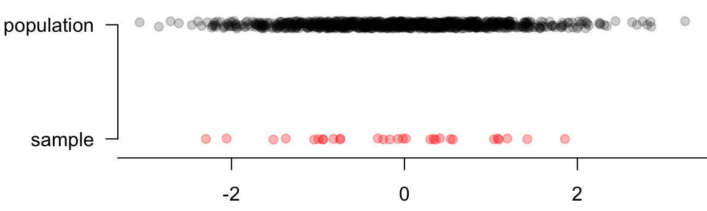
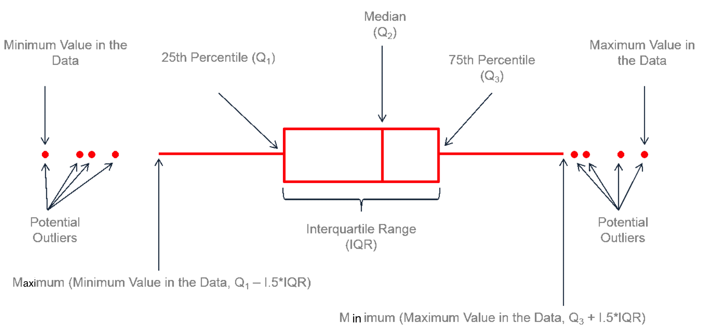

5 Numerical Measures of Data
In this chapter, we are going to learn some important numerical measures that summarize or describe the two important properties of our data, the center and variation.
Numerical Summaries of Data
This is a good and maybe hard question. After all, there are \(n\) data values. How can we just use one value to describe the entire data? In reality, people usually use the “middle” point of the data or some measure of center to describe it or represent the location of the data. The question is, what does “middle” mean? Here we introduce three commonly used measures of center, arithmetic mean, median, and mode.
5.1 Measures of Center
Mean
The (arithmetic) mean or average is calculated by adding up all of the values and then dividing by the total number of them. Let \(x_1, x_2, \dots, x_n\) denote the measurements observed in a sample data of size \(n\). The sample mean is defined as
\[\overline{x} = \frac{\sum_{i=1}^{n} x_i}{n} = \frac{x_1 + x_2 + \dots + x_n}{n}\]
For the interest rate example, the sample mean interest rate is
\[\overline{x} = \frac{10.9\% + 9.9\% + \cdots + 6.1\%}{50} = 11.56\%\]
Calculate Mean in R
In R, we simply put the interest rate vector int_rate in the function mean() to calculate the arithmetic mean. If the data contain missing values, but we still want to compute the arithmetic mean with the missing values removed, we can set the argument na.rm = TRUE in the mean() function.
mean(int_rate)
# [1] 11.6Balancing Point
Why arithmetic mean can be a measure of center? Intuitively we can think of the mean as the balancing point of the distribution. Figure 5.1 is the distribution of the interest rate. If you imagine that we put all those data points on a see-saw or lever, the sample mean is the balancing point or fulcrum (pivot) that keeps the see-saw (lever) balanced horizontally.

Median
The median is the middle value when data values are sorted (from smallest to largest). In the sorted data, half of the values are less than or equal to the median, and the other half are greater than the median. To find the median, we first sort the values.
- If \(n\) is odd, the median is located in the exact middle of the ordered values. Check the example below.
- Data: (0, 2, 10, 14, 8)
- Sorted Data: (0, 2, 8, 10, 14)
- The median is \(8\) . There are two numbers on its right and two on its left. It is right on the middle.
- If \(n\) is even, the median is the average of the two middle numbers. Look at the example below.
- Data: (0, 2, 10, 14, 8, 12)
- Sorted Data: (0, 2, 8, 10, 12, 14)
- The median is \(\frac{8 + 10}{2} = 9\) . The number 8 or 10 cannot be the median because neither is in the exact middle of the sorted data. Their average value 9 is the middle value because three values are smaller (0, 2, 8) and three larger (10, 12, 14) than the value 9.
Calculate Median in R
In R we can obtain the median using the definition as follows. We first sort the data using sort(). By default, the sort() function sorts a data vector in an increasing order. Set decreasing = TRUE in the function if we want the sort to be increasing. When median is calculated, increasing or decreasing order does not matter. The sorted interest rate data is the sort_rate. There are 50 data values, and the median is the average of the 25th value and 26th value, which is 9.9%.
## Compute the median using definition
(sort_rate <- sort(int_rate)) ## sort data
# [1] 5.3 5.3 5.3 6.1 6.1 6.1 6.7 6.7 7.3 7.3 7.3 8.0 8.0 8.0 8.0
# [16] 9.4 9.4 9.4 9.4 9.4 9.9 9.9 9.9 9.9 9.9 9.9 10.4 10.4 10.9 10.9
# [31] 10.9 10.9 10.9 12.0 12.6 12.6 12.6 14.1 15.0 16.0 17.1 17.1 17.1 18.1 18.4
# [46] 19.4 20.0 21.4 24.9 26.3
length(int_rate) ## Check sample size is odd or even
# [1] 50
(sort_rate[25] + sort_rate[26]) / 2 ## Verify the answer
# [1] 9.9
Warning
Be sure to sort the data first if computing the median using the definition. Using un-sorted data leads to a wrong answer! The value below is not the median because
(int_rate[25] + int_rate[26]) / 2
# [1] 8.1A more convenient way of computing the median is using the command median() just as we use mean() for arithmetic mean. We don’t need to sort the data because R does everything for us.
## Compute the median using command median()
median(int_rate)
# [1] 9.9Mode
The mode is the value that occurs most frequently. For continuous numerical data, it is common for there not to be any observations that share the same value, i.e., every data value happened just once. With the definition, mode works better for categorical data. A more practical definition is a bit less specific that a mode is represented by a prominent peak in the distribution.
Calculate Mode in R
There is a mode() function in R, but unfortunately it is not used to compute the mode of data. We can still get the mode using its definition. We can first create a count table of the data, then the data value having the most counts will be our mode. After sorting the frequency table, the number that happens most frequently will be the first element, which is 9.9%. It occurs six times in the data.
## Create a frequency table
(table_data <- table(int_rate))
# int_rate
# 5.3 6.1 6.7 7.3 8 9.4 9.9 10.4 10.9 12 12.6 14.1 15 16 17.1 18.1
# 3 3 2 3 4 5 6 2 5 1 3 1 1 1 3 1
# 18.4 19.4 20 21.4 24.9 26.3
# 1 1 1 1 1 1sort(table_data, decreasing = TRUE)
# int_rate
# 9.9 9.4 10.9 8 5.3 6.1 7.3 12.6 17.1 6.7 10.4 12 14.1 15 16 18.1
# 6 5 5 4 3 3 3 3 3 2 2 1 1 1 1 1
# 18.4 19.4 20 21.4 24.9 26.3
# 1 1 1 1 1 15.2 Comparison of Mean, Median and Mode
The mode is applicable for both categorical and numerical data, while the median and mean work for numerical data only. What is the average of male and female? It is also possible to have more than one mode because two data values, either categorical or numerical, can occurs the same number of times in the data. However, by definition, there can only be one median and one mean.
The mean is more sensitive to extreme values or outliers. In other words, if the data contain one or few values that are very far away from the rest of the data values, the mean will move towards those extreme values, and therefore be away from the rest of the data too. Thank about the seesaw or lever example. If a data point is at very end of the bar, the pivot must be closer to that point to make lever balanced.
The median and mode are more robust than the mean, meaning that these measures of center are more resistant to the addition of extreme values to the data. An example in R is shown below. The data_extreme is the interest rate data with the first value replaced with 90.0 which is extremely higher than all other values. The original interest data has the mean 11.56, but the data_extreme has the higher mean 13.14. The median and the mode, however, stay the same even though a large value 90.0 is in the data.
data_extreme
# [1] 90.0 9.9 26.3 9.9 9.4 9.9 17.1 6.1 8.0 12.6 17.1 5.3 7.3 5.3 8.0
# [16] 24.9 18.1 10.4 8.0 19.4 14.1 20.0 9.4 9.9 10.9 5.3 6.7 15.0 12.0 12.6
# [31] 10.9 9.4 9.9 7.3 18.4 17.1 8.0 6.1 6.7 7.3 12.6 16.0 10.9 9.9 9.4
# [46] 10.4 21.4 10.9 9.4 6.1Below is a figure that shows the differences in where the mean, median, and mode lie for skewed distributions vs. symmetric distributions.
- When the frequency distribution is right-skewed, mean > median > mode.
- When the frequency distribution is left-skewed, mean < median < mode.
- When the frequency distribution is symmetric, mean = median = mode.

5.3 Measures of Variation
Dispersion, spread or variation is another important property of a distribution. If the measure of center tells us the “location” of the distribution, the measures of variation tells us how much the data values spread out. Measures of variation affect the shape of the distribution (Figure 5.3). Here we have three frequency distributions with the same mean, median and mode because their distribution is symmetric. But from top to bottom, the data have small, median and large variation. Basically larger variation means the data values spread out more. When a distribution has large variation, the data values are quite far away from each other and from its mean. Their deviation from the sample mean is large. In this case, using sample mean to represent the entire data set may not be a good idea because data values look very different from it.

p-th percentile
The p-th percentile (quantile) is a data value such that
- at most \(p\%\) of the values are below it
- at most \((1-p)\%\) of the values are above it
Figure 5.4 shows percentiles for ACT math scores. If you want to be in top 10%, i.e., 90th percentile or higher, you must have score at least 28. Back to the question. About 98% of the Data 1 values are in the range from 10 to 30, and Data 2 values are ranging from 0 to 40 98% of the time. Since Data 2 has larger range, its values are more dispersed, and has larger variation than Data 1.
In R we use quantile(x, prob) to find any percentile or quantile of the data vector x through specifying the probability in the prob argument.

Interquartile Range (IQR)
Previously we use the range of two percentiles to determine the degree of variation of data. With the idea, conventionally we use the interquartile range (IQR) to measure the variation.
The first quartile (Q1) is the 25-th percentile of the data. Second quartile (Q2) is the 50-th percentile which in fact is the median of the data. Third Quartile (Q3) is the 75-th percentile of the data. The interquartile Range (IQR) is Q3 - Q1.
To find the IQR, in R we can follow its definition, or get it directly using the IQR() function.
IQR(int_rate)
# [1] 5.72A useful way of quickly getting some important numerical measures is to use the summary() function.
summary(int_rate)
# Min. 1st Qu. Median Mean 3rd Qu. Max.
# 5.3 8.0 9.9 11.6 13.7 26.3Variance and Standard Deviation
The distance of an observation from its (sample) mean, \(x_i - \overline{x}\), is its deviation. The sample Variance is defined as \[ s^2 = \frac{\sum_{i=1}^n(x_i - \overline{x})^2}{n-1}.\]
The sample standard deviation (SD) is the square root of the variance \[ s = \sqrt{\frac{\sum_{i=1}^n(x_i - \overline{x})^2}{n-1}}.\]
(Sample) variance and standard deviation are the most commonly used measures of variation of data. The variance is the average of squared deviation from the sample mean \(\overline{x}\) or the mean squared deviation from the mean. Look at its formula. \((x_i - \overline{x})\) is the deviation from the mean, and \((x_i - \overline{x})^2\) is the squared deviation. If we take the sum of the squared deviations of all data, and divided by the total number of data points, we get the mean squared deviation, just like we get the arithmetic mean \(\frac{\sum_{i=1}^nx_i}{n}\). The only difference is that the denominator is \(n-1\), not \(n.\) The standard deviation is the root mean squared deviation from the mean. It measures, on average, how far the data spread out around the average.
Note
The measures of center and variation discussed here including mean and variance are for the sample data. So be more precise they are sample mean and sample variance. If the sample is representative of its population, its sample mean and sample variance should be close to its population mean and population variance. In statistics, we usually use the Greek letter \(\mu\) to stand for the population mean and \(\sigma^2\) for population variance where \[\mu = \frac{\sum_{j=1}^Nx_j}{N}\] and \[\sigma^2 = \frac{\sum_{j=1}^N(x_j-\mu)^2}{N},\] where \(N\) is the total number of subjects in the population.
Later when we discuss probability, you will learn how we define \(\mu\) and \(\sigma^2\) using the expected value from a probability distribution (Chapter 9 and Chapter 10), which is related to the frequency distribution of data.
But why divide by \(n-1\) instead of \(n\)? Intuitively the smaller our sample, the less likely we are to realistically capture the true magnitude of the variation of the population. Although \(\overline{x}\) and \(s^2\) measure the location and variation of the data, we hope them to faithfully reflect the center and variation of its population because we are interested in the property of population, not the data. We collect sample to learn the population, not the sample itself.
Unless our sample size is big, we underestimate the variance that’s really there in the population. Figure 5.5 illustrates this concept. The sample drawn from the population usually has smaller range (maximum - minimum), and leads to smaller variation. To let the sample variance be more consistent with the population variance, we make the estimates of variance and SD a little bigger by dividing by \(n-1\) instead of \(n\). With this correction, the sample variance is more reliable and useful.
The numerator of \(s^2\) is a sum of squares. In fact a sum of squares has its corresponding degrees of freedom that is actually \(n-1\) in the \(s^2\) case. The the sum of squares divided by its degrees of freedom is called the mean square. We don’t go into the details of sum of squares, degrees of freedom, and their properties, and those topics are usually discussed in advanced probability and statistical inference courses.

Compute Variance and SD in R
In R, we use var() for computing variance and sd() for standard deviation.
5.4 Visualizing Data Variation
Boxplot
Boxplot is a good tool for visualizing data variation and general distribution pattern. It is called a box-and-whisker plot because it is made of a box with lines which are called whiskers extending from the box.
Let’s look at the box first. We have 3 vertical lines here. The lines from left to right indicate Q1, Q2 or the median, and Q3. So the length of the box shows the IQR. Now let’s look at the whiskers. The upper limit of the whisker is the smaller one of the maximal data value and Q3 + 1.5 IQR. The lower limit of the whisker on the left is the larger one of the minimal data value and Q1 - 1.5 IQR. For any data values that are greater than Q3 + 1.5 IQR or smaller than Q1 - 1.5 IQR, we show them as a point. Basically those points are far from the center of the data, and we could potentially treat them as extreme values or outliers.

Interest Rate Boxplot
Below is the boxplot for the interest rate data (Figure 5.7). You can see that there are two very high interest rates in the data. They are 25% or more. And the median interest rate is just about 10%. And so these two data points are suspected outliers. They are way far from the the median or the most data points.

Boxplot in R
In R we use boxplot() to generate a boxplot.
boxplot(int_rate, ylab = "Interest Rate (%)")
Note
The R boxplot is a little different from the one in Figure 5.6.
The end of upper whisker is the largest data value that is below Q3 + 1.5 IQR if there are some outliers greater than Q3 + 1.5 IQR. The end of lower whisker is the smallest data value that is below Q1 - 1.5 IQR if there are some outliers smaller than Q1 - 1.5 IQR.
Q1 and Q3 used in the boxplot generated from R may be different from the Q1 and Q3 computed by the
quantile()function. We don’t quite need to worry about their difference because they are pretty close although different.
5.5 Exercises
- In the following, we will be using the data set
mtcarsto do some data summary and graphics. First load the data set into your R session by the commanddata(mtcars). The data set is like
# mpg cyl disp hp drat wt qsec vs am gear carb
# Mazda RX4 21.0 6 160 110 3.90 2.62 16.5 0 1 4 4
# Mazda RX4 Wag 21.0 6 160 110 3.90 2.88 17.0 0 1 4 4
# Datsun 710 22.8 4 108 93 3.85 2.32 18.6 1 1 4 1
# Hornet 4 Drive 21.4 6 258 110 3.08 3.21 19.4 1 0 3 1
# Hornet Sportabout 18.7 8 360 175 3.15 3.44 17.0 0 0 3 2
# Valiant 18.1 6 225 105 2.76 3.46 20.2 1 0 3 1Please see ?mtcars for the description of the data set.
Use the function
boxplot()to generate a boxplot of 1/4 mile time (qsec). Are there any outliers?Compute the mean, median and standard deviation of displacement (
disp).
-
Mean and standard deviation (SD): For each part, compare data (1) and (2) based on their mean and SDs. You don’t need to calculate these statistics, but compare (1) and (2) by stating which one has a larger mean/SD or they have the same mean/SD. Explain your reasoning.
- -30, 0, 0, 0, 15, 25, 25
- -50, 0, 0, 0, 15, 20, 25
- 0, 1, 3, 5, 7
- 21, 23, 25, 27, 29
- 100, 200, 300, 400, 500
- 0, 50, 350, 500, 600
- Skewness: Facebook data indicate that \(50\%\) of Facebook users have 130 or more friends, and that the average friend count of users is 115. What do these findings suggest about the shape (right-skewed, left-skewed, symmetric) of the distribution of number of friends of Facebook users? Please explain.